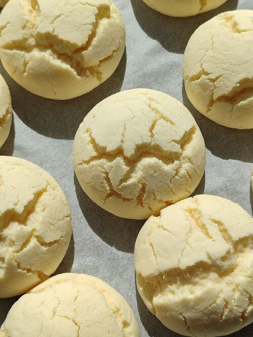

Drömmar

Drömmar är mycket spröda småkakor med mild vaniljsmak som är lätta att baka.
Hjorthornssalt gör att kakorna får sin karakteristiskt porösa och ljuvligt frasiga konsistens.
Ingredienser ca 40–45 kakor
- 100 g smör
- 3 dl strösocker
- 1 dl rapsolja
- 2 tsk vaniljsocker
- 1 tsk hjorthornssalt
- 4 dl vetemjöl
Gör så här
- Sätt ugnen på 150 °C.
- Rör smör och socker mjukt.
- Tillsätt oljan, lite i taget, under vispning.
- Blanda vaniljsocker och hjorthornssalt med lite av mjölet och rör ned blandningen i smeten. Tillsätt sedan resten av mjölet.
- Rulla små bollar av degen och lägg dem på plåtar med bakplåtspapper.
- Grädda mitt i ugnen i cirka 15-20 minuter och låt kallna på plåten.